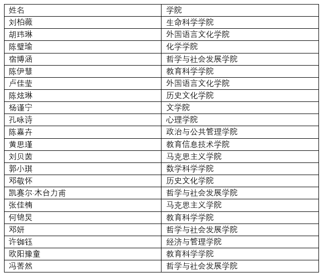
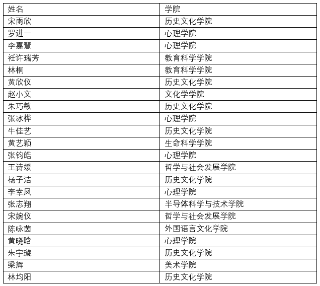

团队建设
用心的备课，精美的ppt，精彩的讲解，
虽然两个脸庞隔着屏幕，
但是真诚的话语，真挚的情感，
让知识的传递可以跨越空间的限制，
温暖的陪伴可以穿过网线到达病房。
part1 总体服务概述
上学期，“一对一”教学服务在两个服务点开展，志愿者们踊跃报名，认真服务，服务时间长，服务质量高，为孩子们带来一堂又一堂精彩纷呈的课堂，给予他们知识与陪伴。
服务点：金丝带
服务对象人数:20人
服务时间:2022.9.10-2023.2.17
总服务时长:487.6h
志愿者参与人次:184人
服务点：益童天使团
志愿者参与人数：53
服务对象人数：23
服务时间 2022.9.1－11.31
服务课时总节数：386节
服务总时数：321.5小时
part2 优秀志愿者表彰
在上学期一对一教学服务过程中涌现了一批优秀的志愿者，他们在服务中践行志愿服务精神，用心服务困境患儿，表现出色，被评为“优秀志愿者”。具体名单如下：
 
慈善心相悦，公益心相印
爱心是志愿者最好的舞台，奉献是志愿者最美的语言
感谢所有辛勤付出的志愿者
感谢所有不畏困难，积极配合开展活动的美丽天使！
part4 志愿者心得示
“一开始几节课小朋友很内向，不爱说话，我确实会感到手无足措。之后小朋友和我越来越熟悉，我再问他问题他也会回答我，有这种变化我自己内心是真的很开心的。”优秀志愿者黄思瑾说，“其实我本来打算下学期不教了，因为下学期的课更多了。改变主意是因为小朋友的妈妈和我说，小朋友希望下学期还是我教，她也说觉得我教的不错，也和小朋友熟悉了，听到家长反馈的时候就真的有一种达成成就的快乐感，也有帮助到别人的一种满足感，所以最后还是决定继续教下去，因为这就是我一直想做的事情。” “我陪伴的孩子是上高中一年级的小雨(化名)，在上课的过程当中，我学习到了教育陪伴不仅仅是单向的输出，在刚开始教学的时后，往往都是我独自准备课件、安排作业。”优秀志愿者张钧皓说，“慢慢地小雨和我提议她想上的内容、作业的形式，我才发现应该要更多关心她在课堂中的体验与感受，接下来的课程我都会尽量安排小雨感兴趣的内容，和她一起合力完成作业，并且在课堂中给予她更多表现、分享的机会，也会不时让他对课堂进行反馈，对于课堂进度和速度做出相应的调整，同时在课堂教学的过程当中，我也时常会一起和小雨思考、解决问题，我想在‘医’路随学当中，我们都应该成为一名与孩子相互成长、学习的陪伴者。”
未曾谋面，但网线也可以搭筑牢固的联系。
知识的传递，
弥补了学习的空白；
温暖的言语，
融化了病房的冰冷。
一台电脑，一颗热心，
一个人的服务，
两个人的成长，
一个家庭的疗愈与轻松。